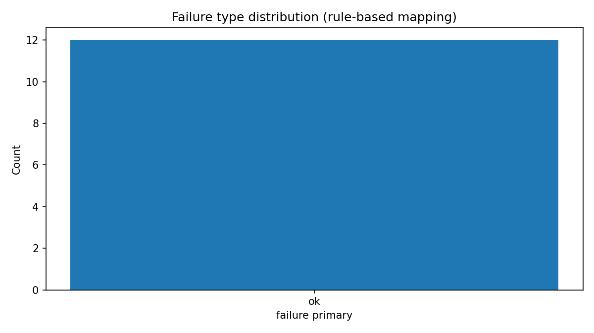
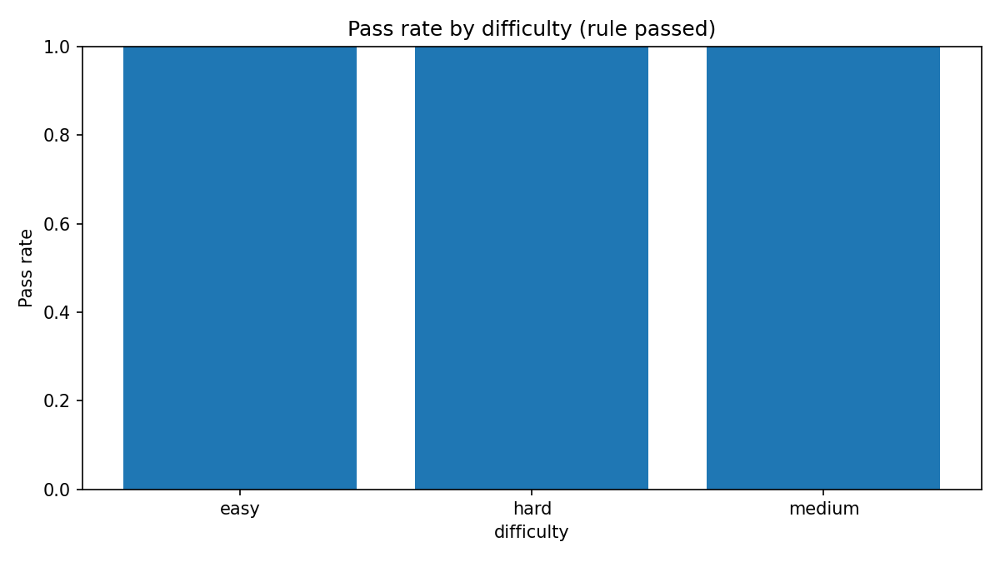
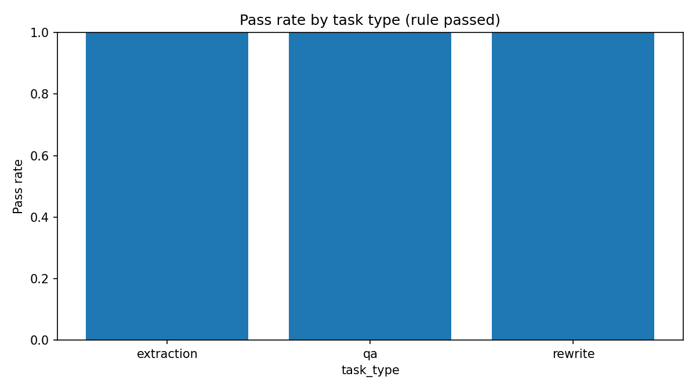
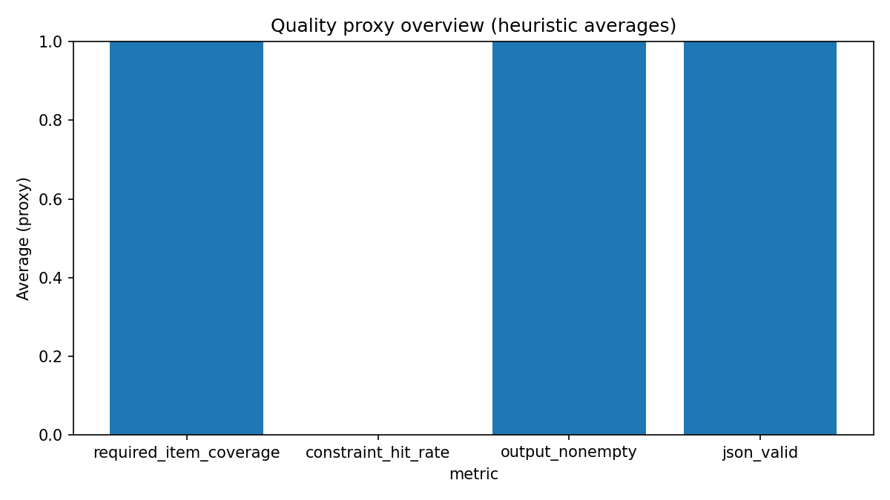

项目背景
普通「对话 demo」往往只展示模型会不会说漂亮话，但真实工作流更关心：输出是否可用、是否违反业务约束、失败时能否定位原因、哪些场景必须人工接管。
本仓库把任务做成可复现的样本（抽取/改写/问答），用同一套评分与 trace 记录，比较不同候选策略的表现差异，并把结果导出为 summary 与图表，便于复盘与展示。
v0.2 方法设计（摘要）
任务类型（3 类）
- extraction：从材料中抽取结构化要点（JD、会议纪要、反馈汇总等）。
- rewrite：在约束下改写成可交付文本（简历要点、邮件、对内摘要等）。
- qa：在规则/FAQ 下作答，部分任务要求严格 JSON 输出。
Workflow（4 条候选）
架构上预留四条：direct / retrieve / planexec / humangate。诚实说明：截至 v0.2，公开跑批实验主要完成的是 direct baseline（单轮直答，可选真实 LLM）；其余 workflow 仍停留在适配器与配置层面，尚未作为完整流水线对照实验发布。
评分层（3 层）
- Rule scoring：可复现硬规则（输出类型、must_include / must_not_do、JSON 可解析等）。
- Quality proxy：轻量启发式代理指标（覆盖度、引用样式信号等），不是语义金标准。
- Failure taxonomy：基于规则与 trace 的初版归因标签，不是学习式智能诊断。
实验数据概览（v0.2 · DeepSeek 兼容 API）
正在加载 assets/data/summary_v0_2_deepseek.json …
下列数字来自本仓库一次真实跑批产物的摘要文件（与 outputs/summaries/v0_2_deepseek/summary.json 对齐后复制到本站资源目录）。
总体
| 指标 | 值 |
|---|
按 task_type
| 类型 | 任务数 | 规则通过任务数 | 规则未通过任务数 |
|---|
按 difficulty
| 难度 | 任务数 | 规则通过任务数 | 规则未通过任务数 |
|---|
规则检查项通过情况
| 检查项 | 规则检查通过数 | 规则检查未通过数 |
|---|
Quality proxy 均值（代理指标）
| 指标 | 值 |
|---|
说明：quality proxy 仅为代理指标，用于粗粒度概览与 triage；其中
constraint_hit_rate 等字段非常粗糙，不能解释为“模型是否真正理解约束”。
为什么「规则通过率」不是全部
规则通过率只能说明输出在结构性合规（类型、锚点短语、禁用短语、JSON 可解析等）上是否达标，不能代表语义事实正确、引用可靠或业务可直接采信。
它不能替代人工复核，尤其涉及合规、对外沟通或高风险决策时。若要逼近“质量定论”，需要更强协议：例如对照金标、抽检、人工标注，以及对 LLM-as-judge 保持审慎。
后续若补充 LLM-as-judge / 人工标注 / 更强失败归因，也应与规则层结果并列呈现，避免把单一通过率写成最终结论。
图表区
图表由 scores.jsonl 经 src/analysis/plot_summary.py 生成，并放入本站资源目录（不直接引用仓库 outputs/）。

failure_type_distribution：基于规则型初版
failure taxonomy 的主标签计数。quality proxy 仅为代理指标。当前全部为
ok，表示未映射到更高优先级失败桶——不等于无幻觉或无事实漂移。

pass_rate_by_difficulty：各难度下规则层通过比例（非语义评分）。本次 easy / medium / hard 均为 100%（样本量：easy 3、medium 6、hard 3）。12/12 规则通过不代表可直接生产部署或无需人工复核。

pass_rate_by_task_type：三类任务各自的规则通过率；extraction / rewrite / qa 各 4 题，本次均为 100%。同上，仅为结构性合规统计。

quality_proxy_overview：quality proxy 仅为代理指标均值条形图；例如
constraint_hit_rate 为 0 属实现层面的粗匹配结果，不宜当作质量定论。
典型结论（保守表述）
- 在本次 12 条任务、direct baseline、DeepSeek 兼容 API 的设置下，规则层未出现结构性失败（12/12 规则通过）；执行侧 12/12 trace 执行成功（无适配器报错）。这属于 workflow reliability 的基础验证：硬门槛（交付物形态 + 锚点短语 + 禁用短语 + JSON 可解析等）被满足，不是最终质量定论。
- 12/12 规则通过 不代表无幻觉、无事实漂移、或可直接生产部署；亦不能替代业务侧人工复核。
-
failure taxonomy 为规则型初版映射；当前全部落在
ok仅说明未命中更高优先级规则桶，不等价于语义无误。 - quality proxy 仅为代理指标；其中多项为 1.0 仍应视为粗信号。若要逼近“质量优秀”，需要更强评测协议（对照答案、抽检、必要时谨慎使用 LLM-as-judge）。
- 本实验不支撑“模型 A 强于模型 B”的泛化结论；只能说明在该任务集与该 workflow 配置下，规则检查是否通过。
仓库结构（简）
data/ 任务定义与 fixtures（可读的 .md / .txt 素材）
src/ Python 实验代码：adapters、clients、scorers、runners、analysis
outputs/ 本地跑批产物（runs / scored_runs / summaries / charts）—建议勿提交大文件
docs/ 方法论、rubric、失败归因说明与实验结果摘要
site/showcase/ 本展示页（GitHub Pages 静态资源）data：任务 JSONL 与素材，保证可复现。src：实验闭环代码。outputs：一次实验的 trace/score/summary（体积大时可 gitignore）。docs：对外说明与方法边界。site：面向访客的静态页与图表副本。
如何运行（开发者）
Mock 模式（无需 API Key，适合跑通流程）：
python -m src.runners.run_experiment --experiment-id local_mockReal LLM 模式：复制 .env.example 为 .env，填写 USE_REAL_LLM=true 与 OpenAI-compatible 端点、密钥、模型名，再运行同样命令。
安全提示：不要把含真实密钥的 .env 提交到 Git；展示页也不引用 outputs/ 的相对路径，而是使用 site/showcase/assets/ 下的副本。
后续规划（克制版）
- 补齐 多 workflow 对照（retrieve / planexec / humangate）与统一实验矩阵。
- 引入更强的质量评测（对照金标、抽检、必要时谨慎引入 LLM-as-judge）。
- 小规模 人工标注与错误类型复盘，迭代失败归因。
- 持续明确边界：本项目不是 SaaS，不是通用评测平台。